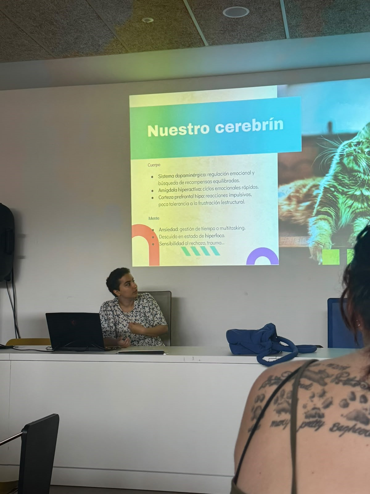
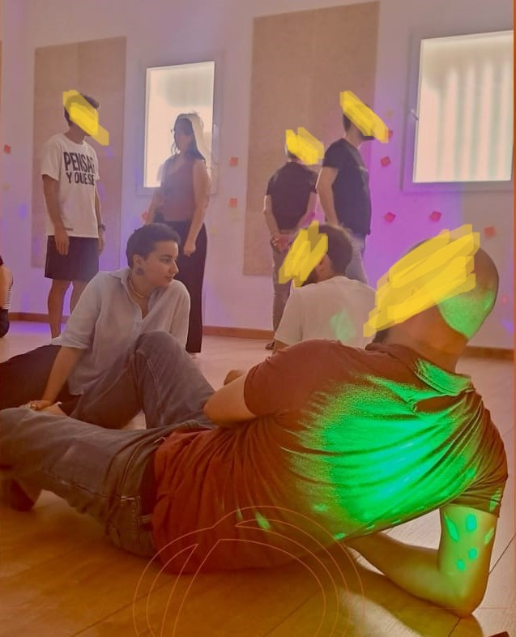
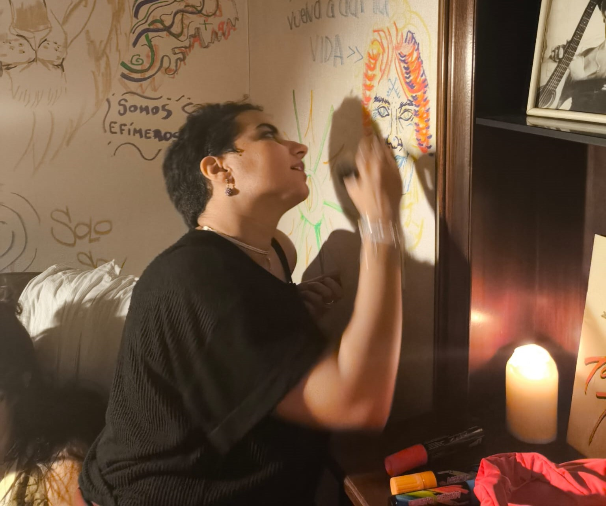
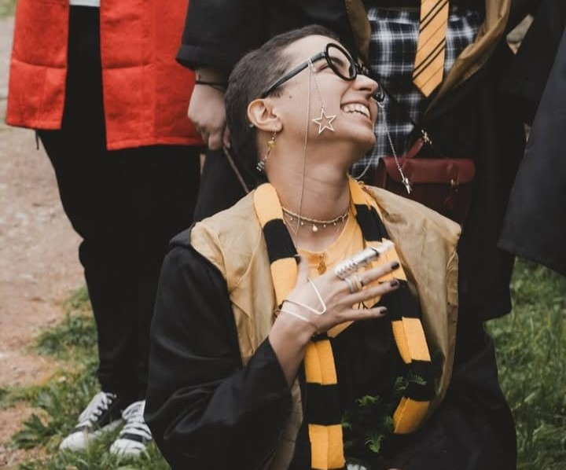

Case studies
Research and systems thinking.
I'm a UX/UI Designer based in Madrid with a background that moves between design, research, accessibility, art, and human behaviour. I enjoy making sense of complexity, building systems, and connecting ideas from different disciplines. Outside of work, I spend my time exploring theatre, painting, music, photography, games, and anything that allows me to keep learning and look at the world through new lenses.


Research and systems thinking.

Articles and reflections.

Conceptual explorations.

Painting and visual storytelling.
Articles exploring design systems, health technologies, creativity and systems thinking through personal experiences, research and curiosity-driven writing.
Jan 2023 - Oct 2025
Jul 2022 - Sept 2022
Jan 2021 - May 2022
Empathy · Clarity · Impact